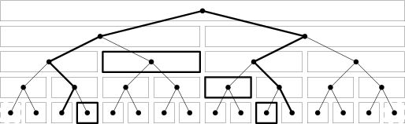
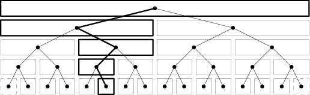

je zrejmé, že ľavý synovia sú na párnych adresách a pravý na nepárnych
zadávanie intervalu do stromu
Nech nový podinterval je <x;y> a pridávaná hodnota je h
nájdem adresu čísla (x-1) medzi listami i:=x-a+n;
(napr. ak som zadal x=a, hľadám kde leží a-1 ,čo je n-ty chlievik nášho poľa)
podobne zistím, kde leží číslo (y+1) j:=y-a+n+2
(napr. ak som zadal y=a, hľadám kde leží a+1 ,čo je (n+2)-ty chlievik nášho poľa)
Teraz obe čísla nechám naraz bublať hore kým nebudú mať rovnakého rodiča (kým sú od seba ďalej ako o 1 políčko)
ale pred posunom nahor zistím či
- ak i je ľavý syn, tak do jeho pravého brata pripočítam hodnotu h
- ak j je pravý syn, tak do jeho ľavého brata pripočítam hodnotu h
Napr. Nech základný interval bol 2 až 15, po pridaní čísel pred a za máme čísla 1 až 16 a tie sú zadané listami stromu
Nech podinterval kde chceme pripočítať hodnotu je 4 až 11
hľadáme polohu čísla 3 ... i:=n+2
hľadáme polohu čísla 12 ... j:=n+11
Pri bublaní nahor zmeníme hodnoty buniek označené na obr1 rámikom
obr.1

1 2 3 4 5 6 7 8 9 10 11 12 13 14 15 16
Celý interval 4-11 sme zapísali pomocou {4} + <5;8> + <9;10> + {11}
Teraz ako určíme aká hodnota je v čísle m z nášho základného intervalu?
- nájdeme adresu čísla m v listoch k:=m-a+n+1;
- necháme ho prebublať až nahor
- pri tejto ceste spočítame všetky čísla, ktoré v bunkách nájdene
Celá cesta je zachytená na obr.2 pre číslo m=6
obr.2
